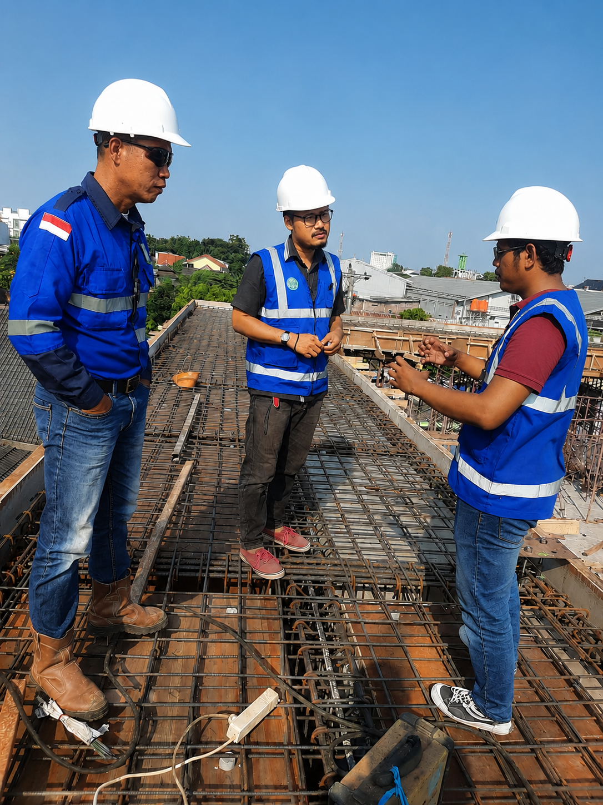

Program Hubungan Industri
Daftar institusi pendidikan formal yang telah mempercayakan kerja sama praktek kerja lapangan di Santoso Konstruksi.


Santoso Konstruksi merupakan penyedia jasa konstruksi dan bengkel las yang berdiri sejak tahun 2016 dengan legalitas Surat Keterangan Usaha (SKU) yang sah. Kami berkomitmen penuh menjadi mitra terpercaya dalam membangun infrastruktur yang kokoh, aman, dan bernilai estetika tinggi.
Santoso Konstruksi menyediakan solusi terbaik untuk konstruksi baja dan pengelasan modern. Didukung tenaga ahli berpengalaman belasan tahun, kami siap menangani proyek hunian, ruko komersial, hingga fasilitas industri.
Kami berspesialisasi dalam pembuatan dan pemasangan kanopi, pagar besi, teralis, plafon, hingga rangka baja ringan yang dikerjakan secara presisi demi keamanan dan kekuatan struktur yang maksimal.
Dengan integritas tinggi, kami berkomitmen mewujudkan proyek impian Anda melalui penawaran harga kompetitif, transparansi material, dan penyelesaian kerja yang tepat waktu.

Menggunakan material pilihan berstandar nasional agar seluruh hasil konstruksi kuat menghadapi segala cuaca.
Dikerjakan oleh tim tukang las dan teknisi lapangan ahli yang mengutamakan tingkat kerapian dan presisi.
Proses manajemen proyek yang disiplin menjamin seluruh pengerjaan selesai sesuai dengan batas kontrak kesepakatan.
Daftar institusi pendidikan formal yang telah mempercayakan kerja sama praktek kerja lapangan di Santoso Konstruksi.